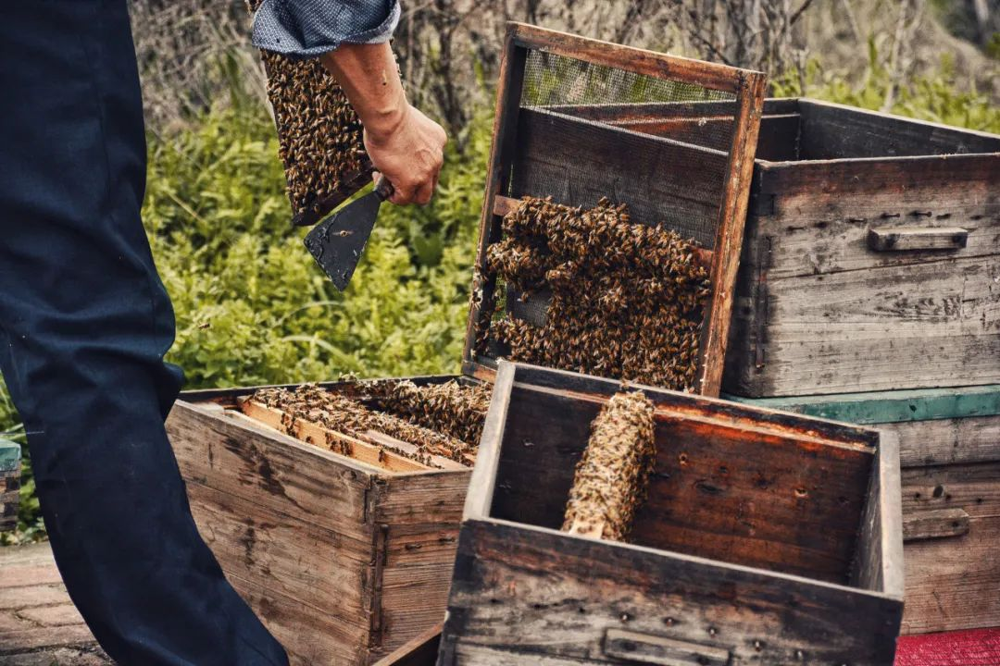
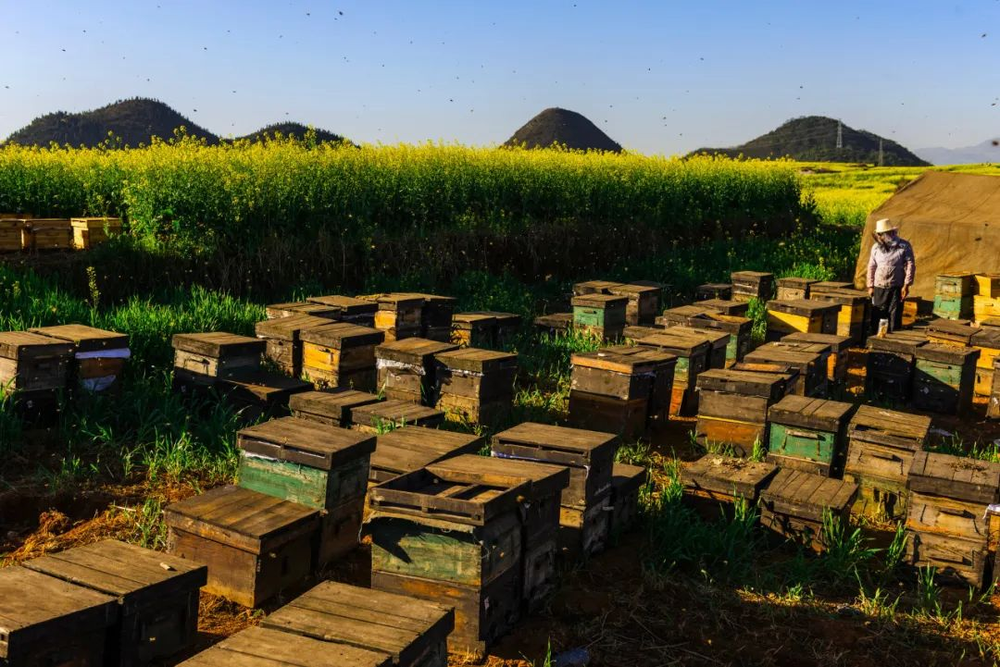
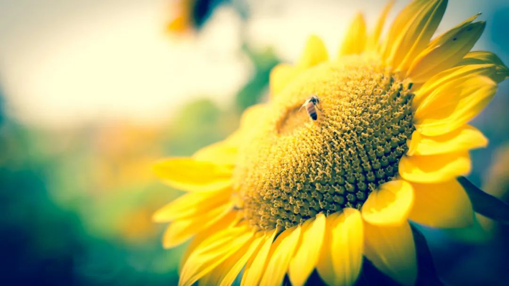
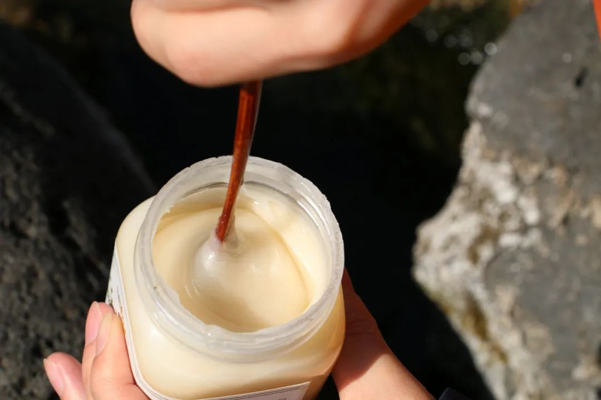
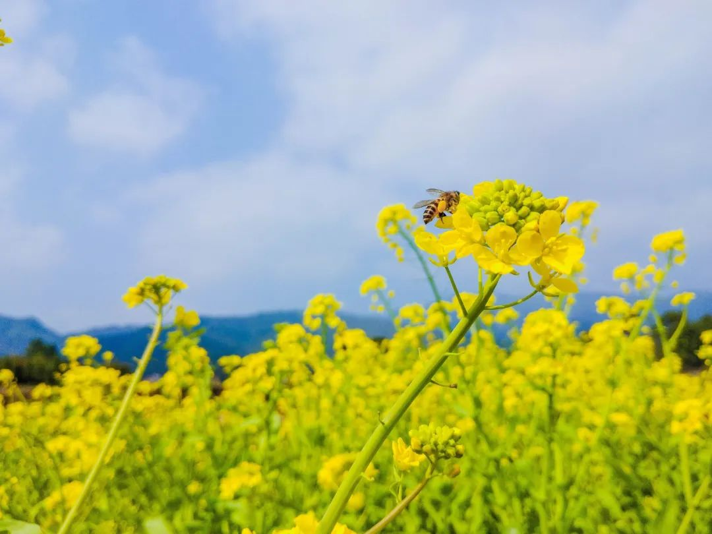
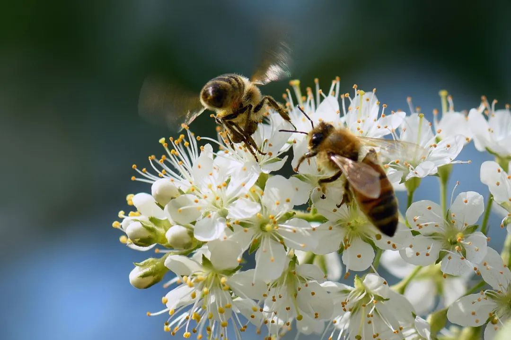

死去的蜜蜂，未卜的追花路和无助的养蜂人
原文链接 备份链接 图片来源：图虫 记者：张钦 编辑：牙韩翔 “ 疫情阻断了中国大部分养蜂人的追花之旅，他们盼望着春天花期的来到，但是却无能为力。 ” “三百天来九州跑，南疆北国采花娇”，在中国，大约有800万人过着这样的游牧式的生活。 …

一年四季，由南至北，不停追逐花期，带蜜蜂转场到新的蜜源地，这是我国800万养蜂人的生存方式。突如其来的疫情中断了这一链环，也波及到农作物的蜜蜂授粉。
实习记者 | 张洁琼
中断的追花转场
刘晓梅最近每天都在盼望着转场。准备时，她要早早起来开始收帐篷，那是她这些年来唯一的住所，她要把附在巢箱上的蜜蜂塞进去，封住蜂箱盖，她要和丈夫一起将五百个箱子挨个搬上9米6的高栏货车。做这些需要花去她一周的时间。最后，她会在天气转凉时的一个夜晚，坐上卡车，和她的蜜蜂们一起离开云南，去追赶下一个花期。

云南的冬天暖和，每年12月底，刘晓梅都会离开湖北荆门老家，将蜂箱运到云南进行春繁。按照原计划，2月10日左右，她本该从云南转至四川，那里油菜花盛放，黄灿灿的花朵上尽是好蜜。之后，回到湖北，采柑橘。4月中旬，她将继续北上到陕甘地区采洋槐，洋槐花已经结成了串，又白又嫩，蜜蜂采来蜜后，便能做成洋槐蜜，那是市场上最受欢迎的一种蜜。
像刘晓梅这样的养蜂法叫做转地养蜂，蜂农要根据花期，由南至北转移到蜜源多的地区。作为世界第一养蜂大国，我国蜜蜂群数已经超过900万群，其中较大的养殖场为了提高采蜜量，均选择转地养殖。数据显示，我国蜂农转场次数大多超过5次，转场范围达到3000公里以上。转场的蜂农养殖的大多为“意大利蜂”，拥有的蜂箱从一百箱至五百箱不等，规模大，专业化程度高，经营成本也高。“我养蜂20多年，没遇过大灾，朋友们都说我运气好，但这是我第一次感到无助了。”刘晓梅告诉本刊。
2月14日，刘晓梅听一位同是湖北籍的养蜂人说，他在海南出不来，无法前往下一个花源地。她这才意识到，自家的五百箱蜜蜂可能出不了云南了。如今，四川的油菜花期已经开始十天，她仍无法按计划启程，疫期的交通管制使得她被迫留在了云南楚雄。**在楚雄，像刘晓梅一样的外地养蜂人就有十几户，五湖四海的养蜂人被困。
**

养蜂这些年，刘晓梅四处奔走，结识了不少养蜂人，一到追花转场时，大家常常会互相照顾。刘晓梅发消息给四川青白江区养蜂的朋友：“如果我湖北身份证不能去，我就把蜂子运过去，你把蜂场当成你的，你去给我搞，我们等封城过了再过去。”朋友一口答应了。
没过两天，政策更严了，当地一听说是她是湖北蜂农就怎么都不放行，朋友也无能为力。这下刘晓梅急了，不能转场，就意味着蜜蜂采不到蜜，没有收成，蜜蜂也只能靠白糖人工饲养，冬天囤的五吨白糖快要见底了，接下来五百箱蜜蜂一周要消耗1吨白糖，每多停留一周，仅饲料费就要花去她6000元。
刘晓梅翻出一份文件：2月15日，农业农村部办公厅、国家发展改革委办公厅、交通运输部办公厅三部委就颁发了文件，将转场蜜蜂列入生活必需品应急保障范畴，全力支持和解决蜜蜂转场问题。《通知》称，除必要的对司机快速体温检测外，确保“三不一优先”（不停车、不检查、不收费、优先通行），便捷快速通行。**她本以为，文件一发，转场就不用愁了，但没想到具体实施时，困难仍然一层接着一层。
**

图 | 视觉中国
“3月10号四川的花期就结束了。”但刘晓梅仍未放弃希望。她掐着日子计算着，只要能找到回湖北荆门的车，4月家里有柑橘，6月有荆条，9月有楠木，虽然都是小蜜源，但维持生计总是可以的。抑或是回去后拼命繁蜂，“湖北蜂箱厂多，到时候卖蜂子，一样可创效益。”
看上去，一年有四五个花期可追，刘晓梅目前只错过了一个，但事实上，错过一次花期的影响是连锁的，“即便蜂农去赶下一个花期，但蜜蜂的状态和正常状况下已经不一样了，它现在是属于饥饿状态。就跟婴儿时期它该喝奶，你不给它喝奶，婴儿的体质能好吗？”国家蜂产业技术体系首席科学家吴杰告诉本刊。
游牧式生存
比起刘晓梅，王桂玲稍微幸运一些，2月15日文件一下发，来自黑龙江的她便能即刻启程，从云南曲靖转场去四川绵阳。每次转场搬家都是最累的事情，一个蜂箱连蜂加蜜有七八十斤重，她和丈夫两个人要在两个多小时将三百个蜂箱装进货车里。转场也给她和丈夫带来了巨大开销，王桂玲算了算，高速费、司机费用和饲料费，去年一年她和丈夫转场的花销接近七万。
但倘若不付出如此大的成本四处转场，蜂农生存会更加艰难。2016年，黑龙江气候不好，蜜源减少，王桂玲和丈夫赔了10万，连越冬喂蜜蜂的白糖都买不起了，她管亲戚借了钱，买了白糖，让蜜蜂们撑过了一个冬天。转年开春，王桂玲和丈夫便踏上了追逐花期的道路，四处寻找蜜源，“走到哪算到哪，我们就这样四海为家了。**”王桂玲说。
**

仲夏时，王桂玲要到黑龙江长白山自然保护区里打椴树蜜。保护区属于无人区，一呆就是一两个月，无人区里没有电，没有信号，过的完全是原始人的生活。没有食物，她便去山里挖野菜和蒲公英来吃。没有水，她和丈夫便挖坑捞地表水出来，烧开了喝。第一次喝，她的脸肿了，全身开始起疱疹，刺疼刺疼的。当时正赶上转场去云南，王桂玲连医院也没来得及去。到了云南后，大马蜂总在她家蜂场附近出没，“跟飞机的动静似的”，马蜂看准了王桂玲家的小意蜂，一把叼走两三个。王桂玲抬起手，预备赶走大马蜂，大马蜂一个回旋，隔着睡衣将螫针扎到了她的后背上。
王桂玲说，常年在外经受风吹雨打，她早已习惯，但对蜜蜂来说，一点蒙蒙细雨，都会影响巨大。一旦下雨，蜜蜂的翅膀会变得潮湿沉重，它们便很难飞起来，若遇上南方连着几天的阴雨天，蜜蜂则要一直留在蜂箱里，靠人工喂养。更严峻的是碰上大雪或霜冻，天水蜂农李志荣告诉本刊，2017年初春，甘肃一带下了一场大雪，雪打在油菜花上，折损了雌蕊，花蜜全没了。
出门在外，困难多，纷争也多。自家蜜蜂叮了别人，被叮的人总要据理力争。“遇到好一些的，我们出医疗费，几百块就平息了。遇到野蛮一点的，一定要管我们讹几千。”王桂玲说。**于是，每到一个新地方，她一定先提几罐蜂蜜，给附近的邻居挨个送一遍。
**

养蜂业从业者吴佩珊告诉本刊，养蜂人中的大多数都是农民，经济基础薄弱，信息也相对闭塞，没有足够强大的能力抵御自然风险。而带给养蜂人最多困扰的还是不断下跌的蜂蜜价格。近两年，由于蜂产品造假挤兑了真蜜空间，蜂产品价格不断下跌，生产者与消费者之间信息不透明，养蜂人只能听从批发商、采购商的调遣，蜂农在蜂产品市场中没有定价权，这些进一步加剧了蜂农面临的市场风险。
王桂玲在长白山自然保护区打出的椴树蜜，颜色雪白，黏稠状像是豆油一样，温度达到13度时，椴树蜜会结晶，普通顾客都以为那是掺杂了白糖的假蜜，这让王桂玲哭笑不得，她告诉本刊：“有买的人问我，怎么我们的蜜不甜，那是他们不知道原生态的蜜都是软绵绵的，有花香，吃起来带一点酸味。特别甜的都是那种掺杂了白糖水的白糖蜜。”去年一年王桂玲卖蜂蜜赚了不足十万，减去四处转场的7万花销，所剩无几。在她看来，自己尚属于收入较好的养蜂人，她的蜜蜂都是零售，所以没赔本，还能有点收入，一天差不多能赚一两百。“大部分养蜂人都没挣着钱，我知道的有养蜂人一年亏30万的，要说赚钱，都被收蜜商赚走了。”她说。

蜜蜂授粉的连锁反应
在外养蜂四处漂泊，生活辛苦，收成还看运气，但总有些理由让养蜂人无法割舍。刘晓梅每到一个地方放蜂，忙完蜂场的活儿，就到附近的风景区转悠。村里的农民待她也热情，看她忙不过来时，便来蜂场里帮忙，动不动还往她的帐篷里送些瓜果蔬菜，还有人干脆拉着刘晓梅到自己园地里，指着菜地说：“刘姐，那块园子是我的，你想吃啥自己来弄。”礼尚往来，刘晓梅制成蜂蜜后也会给当地村民送。“村民们都欢迎我们，因为我们的蜜蜂也可以给他们的农作物授粉。再加上现在惠农政策，提倡蜜蜂授粉。”
“自然界中有85%左右的作物要通过昆虫授粉才能结实，而蜜蜂是人类饲养数量最大的昆虫，它可以被人类驯养，驯养后通过运输工具运送到需要授粉的地方，因此，蜜蜂的重要性就显得特别突出。”国家蜂产业技术体系首席科学家吴杰向本刊强调，“蜜蜂转场受阻，势必会影响到整个农业系统。”
在欧美国家，养蜂业的第一功能和国内完全不一样，他们主业不是生产蜂产品，而是让蜜蜂为农作物授粉。蜂农靠出租蜜蜂授粉的收入，占他们全年收入的75%~90%。吴杰告诉本刊，像温室的草莓、油桃用蜜蜂来授粉，产出率能增长10%~20%，同时果型漂亮，甜度也高，有些果农愿意花钱请蜜蜂来授粉，但这种种植业者在我国的比例还是较小。早些年，因为认识不够，有的村民甚至会将蜂农驱赶出去。**渐渐地，村民们依靠田野经验，意识到了蜜蜂授粉的好处，也开始主动接纳养蜂人。
**

多次转场的养蜂人追的大都是油菜花。油菜花作为重要的经济作物，在我国种植面积大、范围广，养蜂人所获的收益也高。江西农业大学曾志将教授团队曾做过一个油菜授粉实验，将实验分成了三部分处理：一是无蜂授粉区，二是蜜蜂授粉区，三是自然授粉区。无蜂授粉区亩产59.89公斤，自然授粉区亩产91.86公斤，蜜蜂授粉区亩产128.75公斤。实验表明，蜜蜂授粉有明显的增产效果，仅自然授粉是不充分的。
蜜蜂授粉的好处是不言而喻的，但在中国却一直未能广泛推广。深究起来，首要原因是授粉还未能给蜂农带来好的经济收入，蜂农难以靠授粉谋生。前几年，李廷春在内蒙古放蜂，当地农民给他钱，要他的蜜蜂为自己田地授粉。授了几个月，蜜蜂数量迅速减少，他仔细琢磨后才发现，当地有一种葵花，花瓣上有黏胶，蜜蜂授粉时容易粘在上面，飞不回来。授粉赚的钱还不够他买幼蜂花去的钱，他想，这买卖实在不划算，于是此后就很少接授粉的活儿。在新疆，找养蜂人陈跃辉授粉的农民多，但赖账的也多，新疆靠北方，一年真正授粉的时间只有6月、7月两个月。陈跃辉的200箱蜜蜂能给1000亩农作物授粉，但当地授期短，授上一两次，它们就要靠人工喂养了。

此外，蜜蜂采蜜授粉对土地也有要求，一旦农田里有农药的气味，蜜蜂闻到就会很快死亡。“好多地方的农民不是同时打农药，而是今天他打完，明天你打，后天再张三李四家打。蜜蜂受影响的时间很长。”在云南繁蜂的养蜂人李廷春说。2018年《Science》杂志发表的有关研究显示，新烟碱类杀虫剂会伤害蜜蜂大脑，阻碍蜜蜂繁殖，影响它们的觅食和导航方式。而烟碱类物质，诸如啶虫脒、噻虫胺、吡虫啉等，正是全球蜜蜂数量下降的罪魁祸首。但在民间，农民对于农药的危害缺少警觉，仍在大量喷洒农药以防治病虫害。
即便仅从农作物授粉的价值来看，养蜂人和他们的蜜蜂的重要性也被忽视了。吴杰告诉本刊，2006年至2008年间，我国36种主要作物蜜蜂授粉的年均价值高达3042.20亿元，是中国蜂业总产值的76倍，相当于中国农业总产值的12.30%。据他推算，“中国仅蔬菜、果树、棉花、油菜、西瓜、甜瓜和草莓等作物，需要授粉蜂群的数量就达6000万-8800万群，远远超过我国现有的900多万蜂群数。”
⊙文章版权归《三联生活周刊》所有，欢迎转发到朋友圈，转载请联系后台。
点击图片，一键下单
「*营造学社*」

***************▼ 点击阅读原文，******************************进入周刊书店******************************，购买更多好书。***************
原文链接 备份链接 图片来源：图虫 记者：张钦 编辑：牙韩翔 “ 疫情阻断了中国大部分养蜂人的追花之旅，他们盼望着春天花期的来到，但是却无能为力。 ” “三百天来九州跑，南疆北国采花娇”，在中国，大约有800万人过着这样的游牧式的生活。 …
原文链接 备份链接 作者：刘倩 来源：*商业人物*（ID：*biz-leaders）* 养蜂人刘德成死了。在他的蜜蜂因中毒、转场受阻大量死亡之后，于2月13日在云南上吊自杀。 他的死将蜂农这一群体带入大众的视线，也让人们知道新冠肺炎疫情影 …
原文链接 备份链接 2月3号，情势已经急转直下。刘德成发了一个朋友圈，说自己的蜜蜂中毒了。 在四川攀枝花繁蜂的徐仁柱看到后跟他聊了起来。那个晚上，刘德成告诉徐仁柱，从大年初三到现在，光是死去的蜜蜂，他就装了六七桶，都倒掉了，那是能装三四 …
原文链接 备份链接 ——《重要通知》：关于改名的通知—— 早上起床的时候，我放在被子上的手指忽然被什么东西刺了一下，我把手指放到眼前，想看清楚什么东西扎进去了，却什么也没看到，但手指生疼得厉害。 按照我的以往的惨痛经验，我知道我被野蜂蛰 …